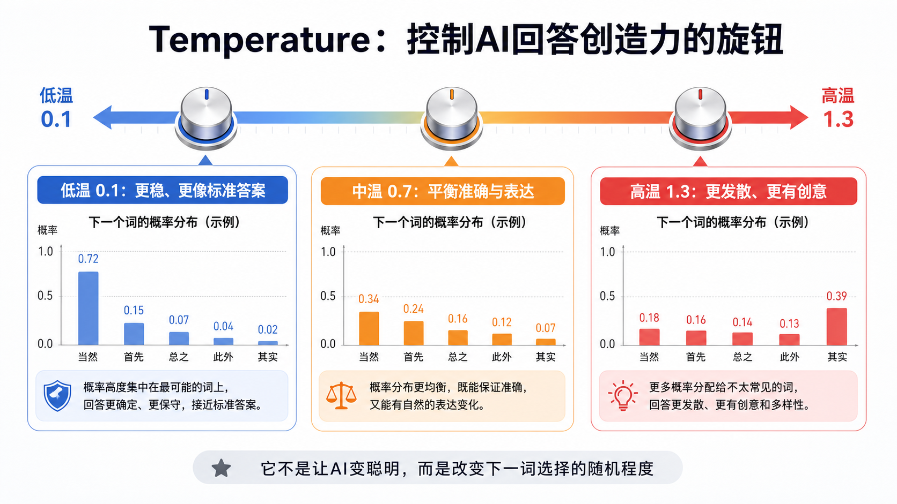
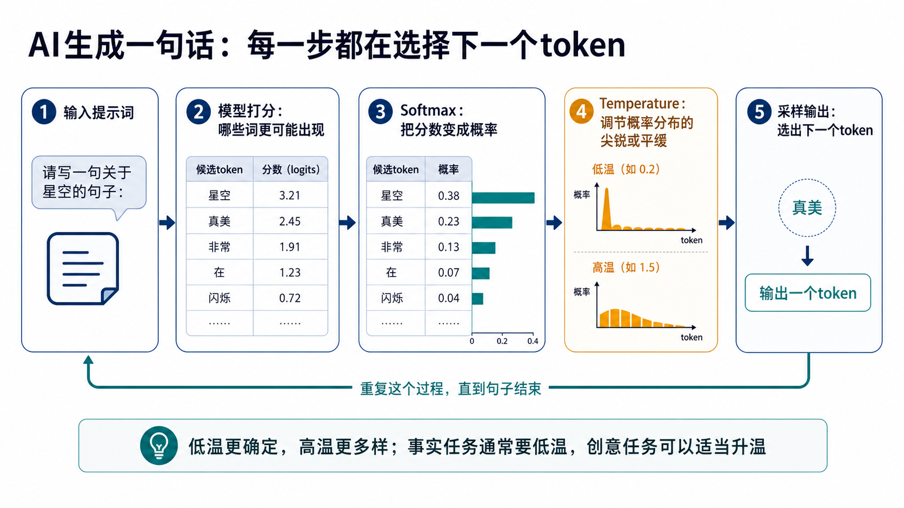

为什么这个概念重要？
很多人用 AI 时会遇到一个奇怪现象：同样的问题，AI 有时回答得很稳，有时表达更丰富，有时甚至变得不太靠谱。很多人会误以为这是模型“心情不好”，其实背后经常和一个参数有关：temperature，也就是采样温度。
大模型生成文字时，并不是一次性写完整段话。它更像一个学生边想边写：先看当前上下文，然后预测下一个最可能出现的 token。每一步，模型都会给很多候选词打分。“采样温度”决定的是：它应该几乎只选最高分的词，还是允许低一些但也合理的词有机会被选中。
理解它很重要，因为这能帮助普通人建立一个基础 AI 世界观：AI 的输出不是凭空冒出来的句子，而是一连串概率选择的结果。你看到的“创造力”，很多时候来自概率分布被调得更平缓；你看到的“稳定”，来自概率分布被调得更尖锐。
一个直观类比：考试答题与创意写作
想象一个学生面对两种任务。
第一种是数学考试：“三角形内角和是多少？”这时老师希望他稳定、准确、不要发挥。他应该直接写“180 度”，而不是写“也许是一个美丽的几何约定”。这就像低温模式：最可靠的答案获得压倒性优势。
第二种是语文创意写作：“请写一句关于夜空的开头。”这时如果学生每次都写“夜空很美”，就太单调了。老师希望他可以换一种说法，比如“城市熄灯后，星星才开始说话”。这就像高温模式：一些不那么常见但仍然合理的表达，会有更多机会被选中。
所以，Temperature 不是让 AI 更聪明，也不是让 AI 掌握更多知识。它更像老师给学生的答题要求：这次要标准答案，还是允许更自由的表达？

工作原理（深入浅出）
先记住一个核心画面：AI 每生成一个 token，都要从很多候选 token 里选一个。Temperature 介入的位置，不是在模型“理解问题”之前，而是在模型已经给候选词打完分之后。
用户给出问题、上下文或任务，例如“写一句关于星空的句子”。模型先读懂当前文本。
模型会估计很多候选 token 的可能性，比如“星空”“真美”“闪烁”“像”等。分数常被称为 logits。
Softmax 像一个换算器，把高低不同的分数变成一组加起来等于 1 的概率。
低温让最高概率更突出，高温让概率分布更平缓。然后系统再从这组概率里采样下一个 token。

可以用一个简化例子理解。假设 AI 要补全“今天的天气很___”，候选 token 的原始倾向可能是：“好”最高，“热”也不错，“奇妙”较低。低温会让“好”几乎总是被选中；高温会让“热”“奇妙”这类较低概率但并非完全不合理的词也有机会出现。
适合事实问答、代码生成、分类、信息抽取、结构化输出。它降低发散性，但不等于绝对正确。
适合普通写作、客服回复、报告润色。既不太死板，也不太飘。
适合广告标题、故事、创意方案。它提高多样性，也会提高偏题和胡编的风险。
关键术语解释
| 术语 | 专业解释 | 白话解释 |
|---|---|---|
| Temperature | 用于调节采样概率分布形状的生成参数，通常较低更确定，较高更多样。 | 控制 AI 回答“稳一点”还是“放开一点”的旋钮。 |
| Token | 模型处理文本的基本单位，可能是一个字、词、词片段或符号。 | AI 写字时使用的小积木。 |
| Logits | 模型在转成概率前给各候选 token 的原始分数。 | 还没换算成百分比的候选词分数。 |
| Softmax | 把一组分数转换成概率分布的函数，输出值通常在 0 到 1 之间且总和为 1。 | 把“分数表”换成“抽签概率表”。 |
| Sampling | 根据概率分布选择下一个 token 的过程。 | 按照概率抽一个词出来。 |
| top-p | 也叫核采样，只从累计概率达到某个阈值的一组高概率 token 中采样。 | 先把最靠谱的一小圈候选留下，再从里面抽。 |
| top-k | 只保留概率最高的 k 个候选 token 参与采样。 | 只让前 k 名候选参加抽签。 |
| Deterministic | 在同样输入下尽量得到相同或接近相同输出的性质。 | 希望 AI 别乱变，尽量每次都一样。 |
一个真实应用案例
假设你在做一个企业客服助手，同一个模型要处理两类任务。
第一类是订单状态判断。用户问：“我的包裹为什么停在中转场？”系统需要 AI 根据物流轨迹判断问题类型，输出类似 delivery_delay、address_issue、customs_hold 的分类。这种任务最好低温，因为分类结果要进入工单系统，不能为了“有创意”而乱选。
第二类是安抚用户的话术。用户已经很着急，客服希望 AI 写一段礼貌、自然、不机械的解释。这时可以用中等温度，让表达更像真人，而不是每次都输出同一句模板。
这也解释了为什么很多 AI 应用不是“调一个全局温度就完事”。一个成熟系统会把任务拆开：哪些步骤要求可靠，哪些步骤允许变化。Temperature 是工程配置的一部分，不是万能魔法。
常见误区（非常重要）
错误。高温只是让低概率候选更容易被选中，可能带来新鲜表达，也可能带来跑题和幻觉。
不一定。低温会更稳定，但不同服务端实现、模型版本、并发和其他采样设置仍可能让结果有差异。
事实问题首先要正确。想要更丰富，应增加上下文、要求引用来源或拆分提问，而不是单纯升温。
很多 API 文档建议优先调其中一个。两者都在改变采样空间，同时乱调会让输出难以解释。
不能。模型缺知识或缺证据时，提高温度只会让它更会编。需要 RAG、工具调用或人工核验。
也不一定。有些新模型或特定推理接口可能不开放这个参数，或要求用提示词、effort 等其他方式控制行为。
总结：3句话讲清核心认知
- Temperature 不是智商旋钮，而是概率分布旋钮：它改变 AI 选择下一个 token 时的随机程度。
- 低温更稳定，适合事实、代码、分类和结构化输出；高温更多样，适合创意写作和头脑风暴。
- 想让 AI 更可靠，不能只靠调温度；还要配合清晰提示、证据检索、工具调用、评估和人工校验。
复习问题
请从“概率分布”和“下一 token 选择”的角度解释。
请说明这个任务更看重稳定性还是多样性。
请比较两个任务的错误成本和创造性需求。